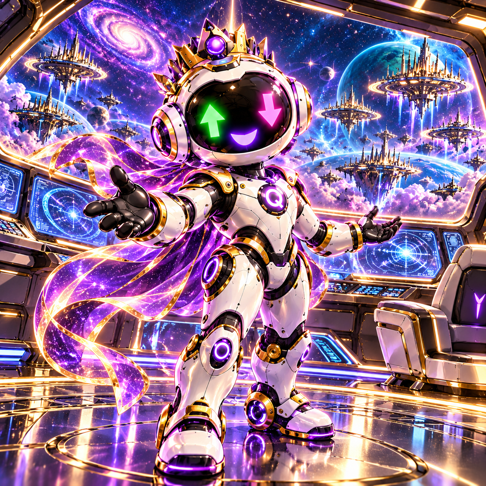
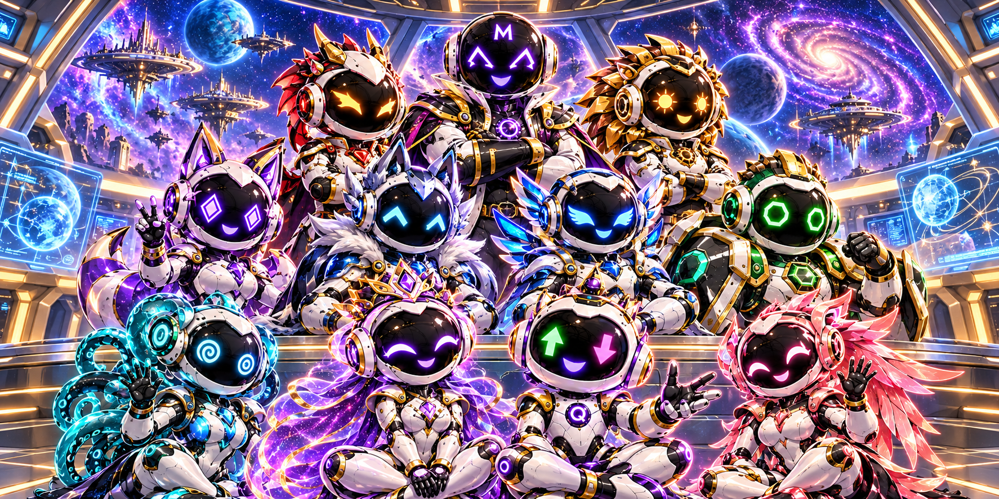

Assemble your crew.
See the evidence.
Own your decision.
Quanta and the QuanterraOS Fighter Pilots bring market data, true fee drag, and settlement rules into one clear cockpit—so you can investigate supported Kalshi and Polymarket contracts before you risk capital.

How QuanterraOS Works in 3 Steps
Choose a Market
Select supported contracts across Kalshi and Polymarket. Review expiration timestamps, venue fee schedules, and underlying index settlement sources.
Assemble Specialists
Equip specialized analytical stations—Draco for data validation, Wolf for order book depth, Sentinel for feed health, and Kraken for settlement basis.
Review Evidence & Cost
Calculate exact taker fee drag, executable ask slippage, and breakeven rate. Generate a private Quanta Decision Receipt before taking action.
Equip Specialist Stations (8 Available)
QuanterraOS operates research mode. Equipping specialists does not place live orders or guarantee financial outcomes.
The QuanterraOS Fighter Pilots Roster
Meet the eleven distinct friendly digital astronauts. Michael Quanterra is the Founder and creator (marked by the capital M on helmet); Quanta is the global galactic leader; Quantana is Queen and companion; supported by eight specialized analysts.
The 44 — Official QuanterraOS Fighter Pilots Artworks
Exactly 44 verified artworks across 4 chapters: Origin Command, Cosmic Street, Executive Orbit, and Royal Ascension. 4 unique master artworks per member. Unminted digital collectibles.
QuanterraOS Fighter Pilots Apparel & Royal Galactic Concepts
78 design concepts across 13 presentation boards. Men's and Women's hoodies, jumpsuits, and structured business attire. All boards are design concepts; commercial checkout is disabled until physical manufacturer samples are approved.